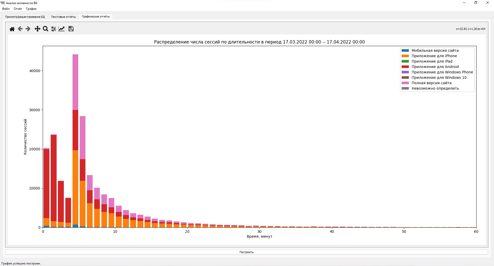
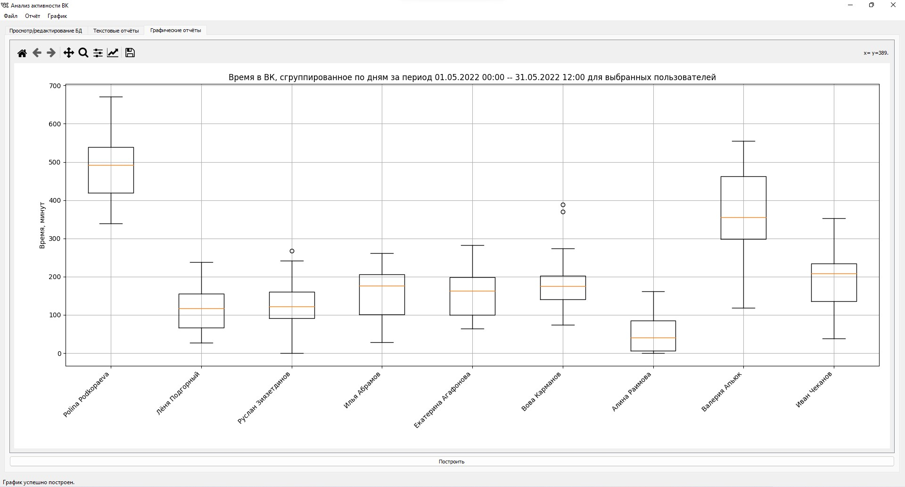
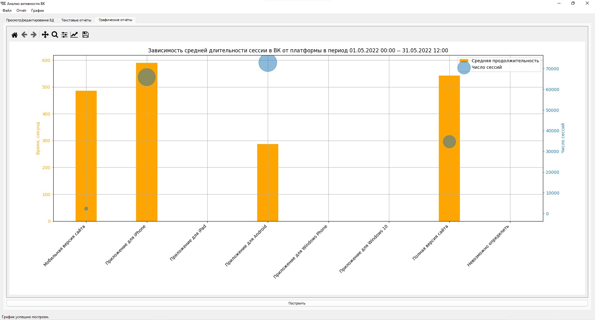

Для начала лучше прочесть первый том, там рассказано про то, почему вообще мне в голову взбрела такая идея.
Итак, наступил февраль, а вместе с ним пришёл и новый предмет: «Python в науке о данных». Звучит вкусно: питон, данные. На деле оно, конечно же, оказалось не так.
Я не люблю заниматься вещами, которые не кажутся мне полезными или, по крайней мере, интересными/забавными. Поработать с питоном и данными я уже успел в конце 2021, а потому в требованиях к проектной работе по предмету оставался только один относительно интересный пункт — графический интерфейс. Вначале я собирался свалить всю работу на сокомандников, а самостоятельно же только «причесать» классы для построения графиков. В итоге один человек не сделал вообще ничего, другой — нарисовал интерфейс в QT Designer и по итогу мы с Ильёй связывали backend и frontend вдвоём. Было интересно, не очень напряжно и, думаю, полезно — как я люблю :)
Немного технических подробностей
Данные в прошлой версии хранились в csv файлах, чтение было очень костыльным, а обработка — невыносимо долгой для конечного пользователя. Поэтому было решено в контролируемых условиях перегонять их в SQLite таблицы и отдавать в красивом формате. Работа скрипта-конвертера для трёхмесячного промежутка занимала около часа, зато впоследствии работа программы ускорялась на порядок.
Из того, что не нравится: работа с интерфейсом вынесена в main.py, хотя никакого смысла в этом нет, только внешний вид кода портит. Но, как и бывает, на защите никто на код не смотрел, дай бог бы работало ©.
Картинки!
Просмотр базы данных


Меню создания графиков и отчётов
Немного красивых графиков
  Забавное наблюдение
День написания контрольной работы по физике в онлайн-формате Обычный день
Текстовый отчёт
Количество сессий выбранных пользователей с разбивкой по платформам